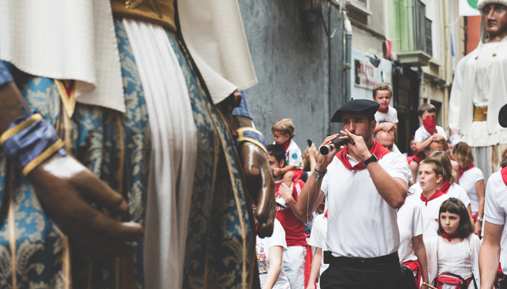

Mañanas sanfermineras guiadas
Una manera distinta de entender la ciudad durante las fiestas.

Las mañanas en San Fermín tienen una personalidad propia. Tras la intensidad del encierro, la ciudad entra en un ritmo diferente, más pausado pero igual de auténtico, que muchos visitantes no llegan a descubrir.
Después del encierro
Una vez termina el encierro, Pamplona cambia de ambiente. Es un momento en el que se mezclan emoción, alivio y una energía distinta, más relajada.
Recorrer la ciudad con contexto
Este es un momento ideal para recorrer el casco antiguo, entender mejor los espacios y descubrir rincones que pasan desapercibidos en otros momentos del día.
Algunas propuestas organizadas permiten hacerlo con mayor profundidad, como las experiencias con gigantes y recorridos.
Una experiencia más tranquila
Frente a otros momentos más intensos, la mañana ofrece una oportunidad para disfrutar con calma, sin renunciar al ambiente de la fiesta.
Integrar la mañana en el plan
Muchas experiencias combinan el encierro con actividades posteriores, creando una experiencia más completa dentro de las experiencias en San Fermín.
Descubrir otra cara de San Fermín
Este enfoque conecta con una forma más auténtica de vivir la fiesta, como explicamos en cómo vivir San Fermín evitando lo turístico.
¿Se pueden adaptar las mañanas sanfermineras a mi gusto? Sí, existen muchas otras actividades durante la mañana en San Fermin, lo mejor para disfrutar de una mañana sanferminera es pleanear las actividades que más encajen contigo. Cuéntanos qué te gustaría y organizamos la mejor Mañana Sanferminera para ti y tu grupo.